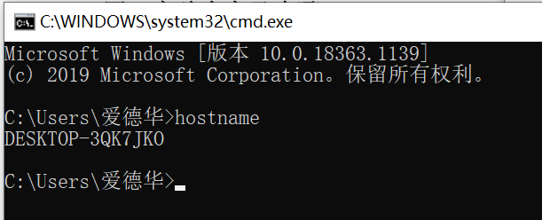

依次输入以下网络测试命令，并观察和分析执行结果：
1.hostname
获取主机名

2.ping
获取ping命令的有关信息

3.ipconfig/all
查看本机ip地址，MAC地址
4.nslookup(提示：可以输入>?命令查看命令参数;可以输入>exit 命令退出)
nslookup用于查询DNS的记录，查询域名解析是否正常，在网络故障时用来诊断网络问题


5.nbtstat –a<ip_address>
nbtstat命令用于显示本地计算机和远程计算机的基于 TCP/IP（NetBT） 协议的 NetBIOS 统计资料、 NetBIOS 名称表和 NetBIOS 名称缓存。 NBTSTAT 可以刷新 NetBIOS 名称缓存和注册的 Windows Internet 名称服务 (WINS) 名称。RemoteName 是远程计算机的 NetBIOS 计算机名称。
nbtstat-a(A)命令显示远程计算机的名称表。区别是 -a 选项后面既可跟远程计算机的计算机名，也可跟IP地址，-A 选项后面只能跟远程计算机的IP地址。
6.netstat
Netstat用于显示与IP、TCP、UDP和ICMP协议相关的统计数据，一般用于检验本机各端口的网络连接情况。如果你的计算机有时候接收到的数据报导致出错数据或故障，你不必感到奇怪，TCP/IP可以容许这些类型的错误，并能够自动重发数据报。但如果累计的出错情况数目占到所接收的IP数据报相当大的百分比，或者它的数目正迅速增加，那么你就应该使用Netstat查一查为什么会出现这些情况了。

netstat -a

netstat 命令：http://man.linuxde.net/netstat
7.netstat–s–e
8.arp –a(提示：先 ping 一个特定的<ip_address>然后再使用该命令)
ARP -A,查询系统中缓存的ARP表。ARP表用来维护IP地址与MAC地址的一一对应。

9.tracert<hostname>/<ip_address>
tracert 是一个简单的网络诊断工具，可以列出分组经过的路由节点，以及它在IP 网络中每一跳的延迟。（这里的延迟是指：分组从信息源发送到目的地所需的时间，延迟也分为许多的种类——传播延迟、传输延迟、处理延迟、排队延迟等，是大多数网站性能的瓶颈之一）

10.pathping<hostname>/<ip_address>
提供有关在源和目标之间的中间跃点处网络滞后和网络丢失的信息。Pathping 在一段时间内将多个回响请求报文发送到源和目标之间的各个路由器，然后根据各个路由器返回的数据包计算结果。因为 pathping 显示在任何特定路由器或链接处的数据包的丢失程度，所以用户可据此确定存在网络问题的路由器或子网。Pathping 通过识别路径上的路由器来执行与 tracert 命令相同的功能。然后，该命令在一段指定的时间内定期将 ping 命令发送到所有的路由器，并根据每个路由器的返回数值生成统计结果。如果不指定参数，pathping 则显示帮助。

11.route print
打印本机路由表
net

12.net share

13.net user

14.net use

15.net session